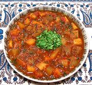

|
Potato StewLebanon - Yakhnet Batta | ||||
| Serves: Effort: Sched: DoAhead: |
5 main *** 1-1/4 hrs Yes |
Potatoes are very popular in Lebanon, and potato stews are made in various ways. This one is easy to make and reheats well. | |||
|
|
2-1/4 11 9 4 1/3 3 ------- 1 1/2 1/2 1/2 ------- 8 2 ------- ar |
# oz oz cl c T --- t t t T --- oz c --- |
Potatoes (1) Tomatoes Onions Garlic Cilantro Olive Oil -- Spices Cinnamon Pepper, Black Chili Flake (3) Salt --------- Tomato Sauce (2) Water -- Serve with Steamed Rice |
Prep: - (45 min)
|
mmv_potstw1 190625 lf190 - www.clovegarden.com
©Andrew Grygus - agryg@clovegarden.com - Linking to
and non-commercial use of this page permitted